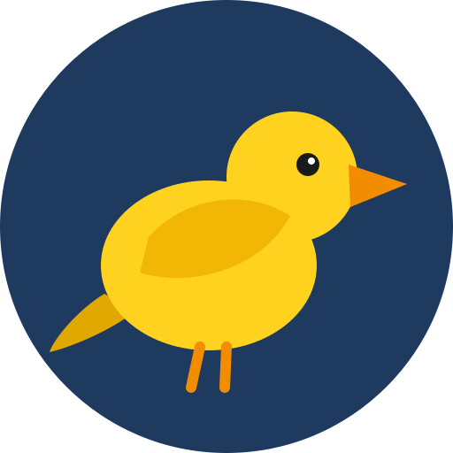

Self-hosted setups you can copy or share
A card is a working self-hosted setup in a form made to be shared: plain files that anyone can read, run on a machine they control, change, and share back. One app, or several wired together.
- Made to shareNothing personal is in it: no device names, hostnames or passwords. You fill in your own. It is plain files in git, so you can fork it and share your version back.
- The whole setupThe apps, images and ports, which machine runs what, and who gets in to each hostname: anyone, your organization's sign-in, or an API key. Edgible publishes them, with TLS.
- The same steps every timeCheck, Start, Publish, Verify, Tear down. Learn one card and you know them all, and so does an AI agent.
- Proof it worksTested end to end on a real Edgible serving device, with the latest result and its date on every card. Rechecked on a rolling schedule, when an app's image changes, and on request; images are scanned every night.
Not an app store: each card is someone's record of what worked for them. Run it as it is, or make it yours and share it back (opens in a new tab). Built an app yourself? Add it (opens in a new tab). Why cards → Run one without Edgible →
Recently added: home-assistant, memos, keeper-sh, frigate, domoticz.
36 app cards, 7 pattern cards, 39 passing their latest test, 33 needs mapped.
Found one that helps? Star edgible-org/cards on GitHub (opens in a new tab), so other people find it too.
App cards
One app each, ready on its own or as a building block. Every app card is tested end to end, and again when it changes or Edgible releases a new version.
- bloglitebloglite, a micro-blog with Markdown, syntax highlighting and phone publishing, public with the owner's own loginpassed 2026-10-29, Edgible 1.4.29fit 3/3

canaryA smoke test for Edgible, one tiny container that answers on every auth modepassed 2026-10-27, Edgible 1.4.12fit 1/3 club-noticeboardClub noticeboard, notices members read without an account, posted by a committee with its own passwordpassed 2026-10-29, Edgible 1.4.29fit 5/5
club-noticeboardClub noticeboard, notices members read without an account, posted by a committee with its own passwordpassed 2026-10-29, Edgible 1.4.29fit 5/5 docmostDocmost, a collaborative team wiki and Notion or Confluence alternative, behind your org loginpassed 2026-10-28, Edgible 1.4.29fit 4/5
docmostDocmost, a collaborative team wiki and Notion or Confluence alternative, behind your org loginpassed 2026-10-28, Edgible 1.4.29fit 4/5- domoticzDomoticz, a home automation hub for lights, switches and sensors, kept on your own machine, with a web interface and phone appspassed 2026-10-30, Edgible 1.4.29fit 4/5
- ech0Ech0, a lightweight publishing platform for short posts, public with the owner's own loginpassed 2026-10-29, Edgible 1.4.29fit 3/4
- edgible-mcpEdgible tools for Claude and other assistants, read-only unless you allow writespassed 2026-10-28, Edgible 1.4.29fit 1/1
- frigateFrigate, a security camera recorder that finds people and cars on your own machine, behind your org loginpassed 2026-10-30, Edgible 1.4.29fit 2/32.9 GB download
 giteaGitea, your own Git forge, with Git over HTTPS and SSHpassed 2026-10-29, Edgible 1.4.29fit 2/4
giteaGitea, your own Git forge, with Git over HTTPS and SSHpassed 2026-10-29, Edgible 1.4.29fit 2/4 home-assistantHome Assistant, one app for all your smart devices, with automations that keep running without the cloud, kept on your own machine, with a web interface and phone appsnot tested yetfit 4/51.3 GB download
home-assistantHome Assistant, one app for all your smart devices, with automations that keep running without the cloud, kept on your own machine, with a web interface and phone appsnot tested yetfit 4/51.3 GB download immichImmich, your photo and video library, for its phone apps and the webpassed 2026-10-29, Edgible 1.4.29fit 3/4
immichImmich, your photo and video library, for its phone apps and the webpassed 2026-10-29, Edgible 1.4.29fit 3/4 jellyfinJellyfin, your films, shows and music, streamed to its apps and the webpassed 2026-10-29, Edgible 1.4.29fit 4/5
jellyfinJellyfin, your films, shows and music, streamed to its apps and the webpassed 2026-10-29, Edgible 1.4.29fit 4/5- keeper-shKeeper.sh, which syncs calendars between iCal feeds, CalDAV and other sources without Google in the middle, on its own loginpassed 2026-10-30, Edgible 1.4.29fit 3/5
- leafwikiLeafWiki, a fast Markdown wiki with a page tree, for a team, behind your org loginpassed 2026-10-29, Edgible 1.4.29fit 3/5
- linkdinglinkding, a minimal bookmark manager, for your browsers and its extensionpassed 2026-10-27, Edgible 1.4.12fit 3/5
 litellmAn AI gateway for your apps, one address for every model, with a key and a budget per apppassed 2026-10-29, Edgible 1.4.29fit 3/4
litellmAn AI gateway for your apps, one address for every model, with a key and a budget per apppassed 2026-10-29, Edgible 1.4.29fit 3/4- mcp-bridgeAny stdio MCP server, published over Streamable HTTP for your AI assistantspassed 2026-10-12, Edgible 1.4.6fit 1/2
- mcp-signinSign in with Edgible in front of any MCP server, so Claude on the web and phone can use itpassed 2026-10-30, Edgible 1.4.29fit 3/3
- memosMemos, a private note-taking app on a SQLite file, for the web and its phone appspassed 2026-10-30, Edgible 1.4.29fit 4/5
- minecraftA Minecraft server for friends on PC over TCP and on phones over UDP, one worldpassed 2026-10-31, Edgible 1.4.29fit 1/2
- minifluxMiniflux, the minimalist feed reader, behind your org loginpassed 2026-10-29, Edgible 1.4.29fit 4/4
- ollama-osxOllama on an Apple Silicon Mac, natively on its GPU, as an API behind a keypassed 2026-10-27, Edgible 1.4.12
- openclawOpenClaw, the open-source AI agent, with its Control UI behind your organisation's sign-inpassed 2026-10-29, Edgible 1.4.29fit 4/41.3 GB download
- otter-wikiOtter Wiki, a simple Markdown team wiki that keeps every page in Git, behind your org loginpassed 2026-10-29, Edgible 1.4.29fit 3/4
- owncloudownCloud Infinite Scale, your files and shares, for its desktop and phone apps and the webpassed 2026-10-29, Edgible 1.4.29fit 4/4
 ralllyRallly date polls, open to anyone with the link and sign-in limited to the emails you listpassed 2026-10-30, Edgible 1.4.29fit 4/4
ralllyRallly date polls, open to anyone with the link and sign-in limited to the emails you listpassed 2026-10-30, Edgible 1.4.29fit 4/4- static-siteA static website from a tarball URL, served by Caddy and kept up to datepassed 2026-10-29, Edgible 1.4.29fit 1/3
- stirling-pdfStirling-PDF, the PDF toolbox, behind your org loginpassed 2026-10-12, Edgible 1.4.6fit 1/21.1 GB download
- teamdeskTeamdesk, room bookings, tasks and announcements for a small team, behind the organisation's Edgible sign-inpassed 2026-10-27, Edgible 1.4.12fit 3/3
 umamiUmami analytics, the dashboard behind org and the tracking script openpassed 2026-10-28, Edgible 1.4.29fit 4/4
umamiUmami analytics, the dashboard behind org and the tracking script openpassed 2026-10-28, Edgible 1.4.29fit 4/4 uptime-kumaUptime Kuma, the uptime monitor, behind your org loginpassed 2026-10-29, Edgible 1.4.29fit 1/2
uptime-kumaUptime Kuma, the uptime monitor, behind your org loginpassed 2026-10-29, Edgible 1.4.29fit 1/2 vaultwardenVaultwarden, a Bitwarden-compatible password server, for your own apps and browserspassed 2026-10-27, Edgible 1.4.12fit 4/5
vaultwardenVaultwarden, a Bitwarden-compatible password server, for your own apps and browserspassed 2026-10-27, Edgible 1.4.12fit 4/5- wiki-goWiki-Go, a databaseless flat-file team wiki with roles and page access rules, behind your org loginpassed 2026-10-29, Edgible 1.4.29fit 5/5
- wiki-jsWiki.js, a team wiki and knowledge base with Markdown and Git sync, behind your org loginpassed 2026-10-29, Edgible 1.4.29fit 4/5
 wordpressWordPress with MariaDB, installed before it goes publicpassed 2026-10-29, Edgible 1.4.29fit 3/4
wordpressWordPress with MariaDB, installed before it goes publicpassed 2026-10-29, Edgible 1.4.29fit 3/4- xwikiXWiki, an extensible team wiki and Confluence alternative, behind your org loginpassed 2026-10-29, Edgible 1.4.29fit 4/5
Pattern cards
Several apps wired together for a purpose, built from app cards.
- accountsSign-up and sign-in for your visitors, and the console that manages themnot tested yet
- assistantChat that answers from your own documents, and the model that runs itnot tested yet
- ciYour own Git forge with CI, and the runner on a machine of its ownpassed 2026-10-30, Edgible 1.4.29
- edgible-agentYour own AI agent that looks after your Edgible apps, from your phonepassed 2026-10-30, Edgible 1.4.292 GB download
- edgible-connectorEdgible in Claude's web, desktop and phone apps, signed in with Edgiblepassed 2026-10-28, Edgible 1.4.29
 n8nLocked editor and open webhook hostname, one n8n processpassed 2026-10-29, Edgible 1.4.29
n8nLocked editor and open webhook hostname, one n8n processpassed 2026-10-29, Edgible 1.4.29- websitePublic React site, its editor, open tracker, locked dashboard, locked monitornot tested yet
No card matches. Try fewer words, clear a filter, or start from a need.
Start from a need
What people want to self-host, whether it suits a machine of your own, and how to publish it safely. All 33 needs.
Leaving a hosted service?
- 1Password
- Adobe Acrobat online
- Alexa routines
- Amazon Photos
- Arlo Secure
- Auth0
- AWS Cognito
- Beehiiv
- Better Uptime
- Bitbucket
- Bitwarden cloud
- Botpress Cloud
- Box
- Braintrust
- Calendly
- Chatbase
- ChatGPT
- CircleCI
- Clerk
- Confluence
- Dashlane
- Descript transcription
- Doodle
- Dropbox
- ElevenLabs
- Evernote
- Evernote scanning
- Fastmail
- Fathom
- Feedly
- Firebase Auth
- Flickr
- Ghost(Pro)
- GitBook
- GitHub
- GitHub Actions minutes
- GitHub Pages
- GitLab CI minutes
- GitLab.com
- Gmail
- Google Analytics
- Google Calendar
- Google Calendar booking pages
- Google Contacts
- Google Drive
- Google Home
- Google Keep
- Google Photos
- Google Workspace
- Guru
- Helicone
- IFTTT
- Inoreader
- Instapaper
- Intercom Fin
- LangChain hosted tools
- LangSmith
- LastPass
- Make
- Medium
- Microsoft 365
- Midjourney
- Minecraft Realms
- Nest Aware
- NewsBlur
- NextDNS
- Notion
- Omnivore
- OneDrive
- OneNote
- OpenAI GPTs and Assistants
- Otter.ai
- Pinboard
- Pinecone
- Pingdom
- Plausible cloud
- Plex Pass
- Qdrant Cloud
- Raindrop.io
- Relevance AI
- Ring Protect
- SharePoint
- Simple Analytics
- Slab
- SmartThings
- Squarespace
- Stack AI
- Statuspage
- Substack
- Tidio
- UptimeRobot
- Voiceflow
- Weaviate Cloud
- Weights & Biases Weave
- Wix
- WordPress.com
- Zapier
- Zapier MCP
- Zilliz Cloud
With an AI agent
The edgible-cards skill (opens in a new tab) teaches an AI agent, such as Claude Code, to go from a need to a running, published card, to look after it, and to build and share a new card when none fits. Use cards with your AI →